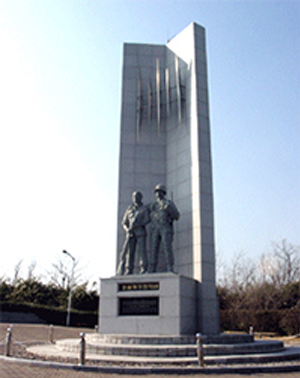
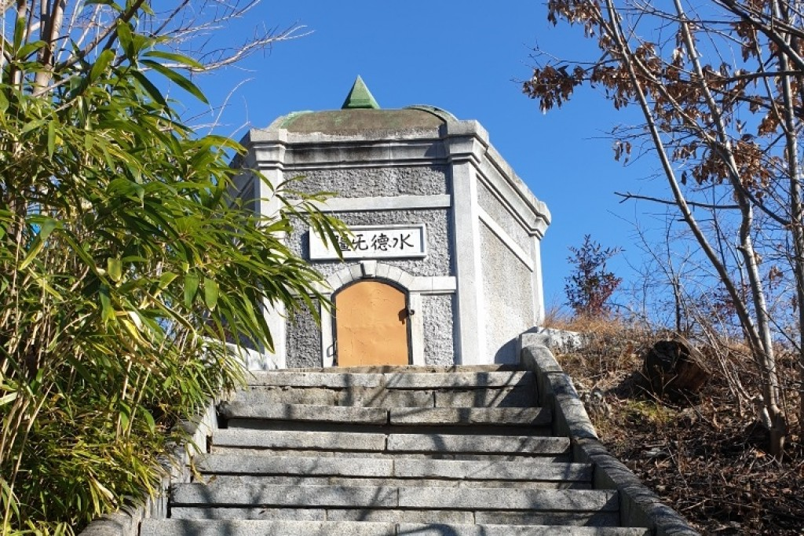

오전 · 호미곶
설화에서 해양환경사로
호미곶의 역사와 등대·항로표지를 현장에서 살펴본 뒤, 지정된 육상 보행로에서 해양 플로깅과 기록 활동을 진행하고 호미곶파출소에서 해양 안전교육을 받습니다.
09:30–11:40 · 플로깅 60분 + 해양 안전교육
포항고등학교 · 2026학년도 제2회 나라사랑 지역 인문학 기행
호미곶에서 설화와 어업, 등대의 역사를 읽습니다. 해안을 관찰하고 기록한 뒤, 학도의용군의 기억과 수도산의 오래된 도시 시설을 찾아갑니다.
08:10 학교 집결 · 신청 마감 10월 14일(수) · 최종 인원은 모집 후 확정

오전 · 호미곶
호미곶의 역사와 등대·항로표지를 현장에서 살펴본 뒤, 지정된 육상 보행로에서 해양 플로깅과 기록 활동을 진행하고 호미곶파출소에서 해양 안전교육을 받습니다.
09:30–11:40 · 플로깅 60분 + 해양 안전교육

오후 · 학도의용군
전승기념관·전몰학도충혼탑·이우근 편지비에서 1950년 포항전투와 학생 개인의 경험, 이후의 추모 방식을 살펴봅니다.
13:50–14:50 · 기념관과 야외 기념시설

오후 · 수도산
옛 배수지의 기능을 도시 생활과 연결하고, 모갈거사비와 공원에 남은 지역의 기억을 읽습니다.
15:10–16:20 · 수도산·덕수공원
호미곶 → 호미곶파출소 → 수화식당 → 학도의용군 기념시설 → 수도산·덕수공원